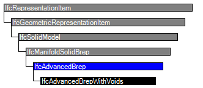

Natural language names
 | Boundary Representation - NURBS |
 | Advanced Brep |
 | Représentation frontière avancée |
| Boundary Representation - NURBS |
| Advanced Brep |
| Représentation frontière avancée |
| Item | SPF | XML | Change | Description | IFC2x3 to IFC4 |
|---|---|---|---|---|
| IfcAdvancedBrep | ADDED |
An advanced B-rep is a boundary representation model in which all faces, edges and vertices are explicitly represented. It is a solid with explicit topology and elementary or free-form geometry. The faces of the B-rep are of type IfcAdvancedFace. An advanced B-rep has to meet the same topological constraints as the manifold solid B-rep.
NOTE The advanced B-rep has been introduced in order to support the increasing number of applications that can define and exchange B-rep models based on NURBS or other b-spline surfaces.
 |
Figure 305 illustrates use of IfcAdvancedBrep for boundary representation models with b-spline surfaces. The diagram shows the topological and geometric representation items that are used for advanced B-reps, based on IfcAdvancedFace. |
|
Figure 305 — Advanced Brep |
NOTE Entity adapted from advanced_brep_shape_representation defined in ISO 10303-514.
HISTORY New entity in IFC4
Informal Propositions:
| Rule | Description |
|---|---|
| HasAdvancedFaces | Each face of the advanced B-rep shall be of type IfcAdvancedFace. |

| # | Attribute | Type | Cardinality | Description | C |
|---|---|---|---|---|---|
| IfcRepresentationItem | |||||
| LayerAssignment | IfcPresentationLayerAssignment @AssignedItems | S[0:1] | Assignment of the representation item to a single or multiple layer(s). The LayerAssignments can override a LayerAssignments of the IfcRepresentation it is used within the list of Items. | X | |
| StyledByItem | IfcStyledItem @Item | S[0:1] | Reference to the IfcStyledItem that provides presentation information to the representation, e.g. a curve style, including colour and thickness to a geometric curve. | X | |
| IfcGeometricRepresentationItem | |||||
| IfcSolidModel | |||||
| Dim :=3 | IfcDimensionCount | [1:1] | The space dimensionality of this class, it is always 3. | X | |
| IfcManifoldSolidBrep | |||||
| 1 | Outer | IfcClosedShell | [1:1] | A closed shell defining the exterior boundary of the solid. The shell normal shall point away from the interior of the solid. | X |
| IfcAdvancedBrep | |||||
<xs:element name="IfcAdvancedBrep" type="ifc:IfcAdvancedBrep" substitutionGroup="ifc:IfcManifoldSolidBrep" nillable="true"/>
<xs:complexType name="IfcAdvancedBrep">
<xs:complexContent>
<xs:extension base="ifc:IfcManifoldSolidBrep"/>
</xs:complexContent>
</xs:complexType>
ENTITY IfcAdvancedBrep
SUPERTYPE OF(IfcAdvancedBrepWithVoids)
SUBTYPE OF (IfcManifoldSolidBrep);
WHERE
HasAdvancedFaces : SIZEOF(QUERY(Afs <* SELF\IfcManifoldSolidBrep.Outer.CfsFaces |
(NOT ('IFCTOPOLOGYRESOURCE.IFCADVANCEDFACE' IN TYPEOF(Afs)))
)) = 0;
END_ENTITY;
 EXPRESS-G diagram
EXPRESS-G diagram Link to this page
Link to this page